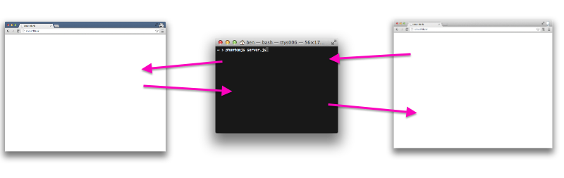
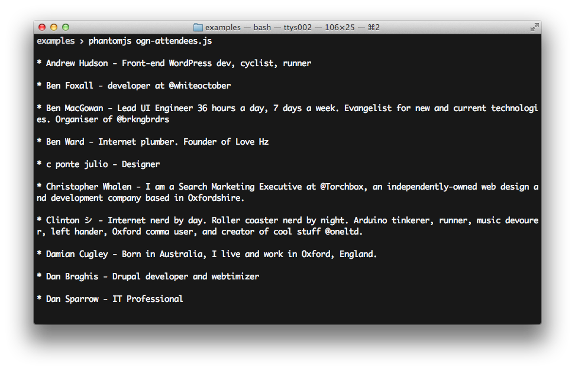
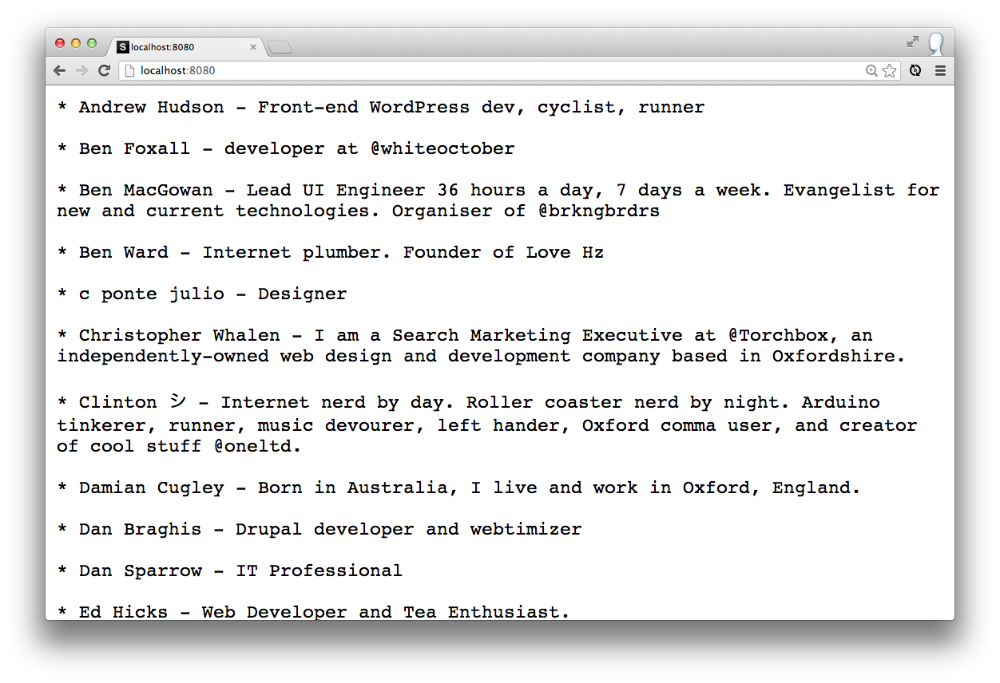

serving websites
to websites
with PhantomJS
Ben Foxall
@benjaminbenben
Does a webpage have a hotpink background?
1. visit the webpage
2. inspect the body element
3. check it's awesome
How about checking 1000 pages?
phantomjs hot_pink.js http://benjaminbenben.com/hot-pink.html
yeah, totally!
example: mediaqueri.es

#ogn32 Attendees
var page = require('webpage').create(),
url = 'https://m.lanyrd.com/2013/ogn32/attendees/';
page.open(url, function (status) {
var attendees = page.evaluate(function(){
return $('a[href^="/profile"] .title').map(function(){
var name = $(this).text().trim(),
bio = $(this).next().text().trim();
return name + ' - ' + bio;
});
});
attendees.forEach(function(attendee){
console.log("* " + attendee)
});
phantom.exit();
});

var server = require('webserver').create();
server.listen(8080, function(request, response) {
var page = new WebPage();
page.open('https://m.lanyrd.com/2013/ogn32/attendees/', function (status) {
// … fetch attendees as before
response.setHeader('Content-Type', 'text/plain; charset=utf-8');
response.statusCode = 200;
attendees.forEach(function(attendee){
response.write("* " + attendee + "\n\n");
})
response.close();
page.close();
});
});

serving websites
to websites
with PhantomJS
response.setHeader("Access-Control-Allow-Origin","*");
$.get('http://ogn32-attendees.herokuapp.com/').then(function(response){
$('#ogn-attendees').text(response);
});
#ogn-attendees
$.get('http://ogn32-sitepic.herokuapp.com/').then(function(response){
$('#ogn-image').append($(' ',{src:response}));
});
',{src:response}));
});
#ogn-image
Analysing content
Links by link area
var links = page.evaluate(function () {
return [].reduce.call(document.querySelectorAll('a'), function(memo, a){
var bb = a.getBoundingClientRect(),
area = bb.width * bb.height,
href = a.href
if(area)
memo[href] = (memo[href] || 0) + area;
return memo;
},{});
});
response.setHeader("Content-Type", "application/json");
response.statusCode = 200;
response.write(JSON.stringify(links));
response.close();
$.getJSON('http://…').then(function(data){
console.log("links - ", data.links);
})